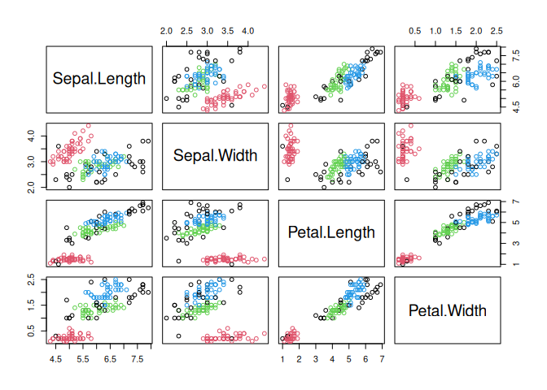
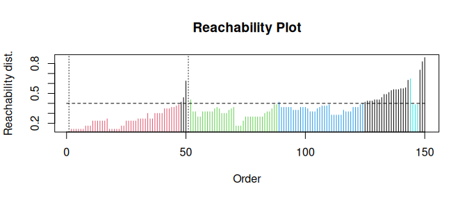
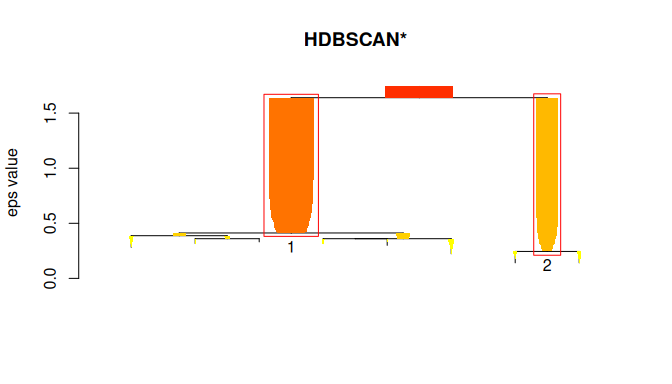
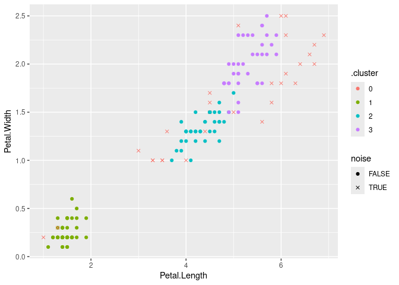

R package dbscan - Density-Based Spatial Clustering of Applications with Noise (DBSCAN) and Related Algorithms


Maintainer: Michael Hahsler
Introduction
This R package (Hahsler et al. 2019) provides a fast C++ (re)implementation of several density-based algorithms with a focus on the DBSCAN family for clustering spatial data. The package includes:
Clustering
- DBSCAN: Density-based spatial clustering of applications with noise (Ester et al. 1996).
- FOSC: Framework for optimal selection of clusters for unsupervised and semisupervised clustering of hierarchical cluster trees (Campello et al. 2013).
- HDBSCAN: Hierarchical DBSCAN with simplified hierarchy extraction (Campello et al. 2015).
- Jarvis-Patrick Clustering: Clustering using a similarity measure based on shared near neighbors (Jarvis and Patrick 1973).
- OPTICS/OPTICSXi: Ordering points to identify the clustering structure and cluster extraction methods (Ankerst et al. 1999).
- SNN Clustering: Shared nearest neighbor clustering (Ertöz et al. 2003).
Outlier Detection
- LOF: Local outlier factor algorithm (Breunig et al. 2000).
- GLOSH: Global-Local Outlier Score from Hierarchies algorithm (Campello et al. 2015).
Cluster Evaluation
- DBCV: Density-based clustering validation (Moulavi et al. 2014).
Fast Nearest-Neighbor Search (using kd-trees)
- kNN search
- Fixed-radius NN search
The implementations use the kd-tree data structure (from library ANN) for faster k-nearest neighbor search, and are for Euclidean distance typically faster than the native R implementations (e.g., dbscan in package fpc), or the implementations in WEKA, ELKI and Python’s scikit-learn.
The following R packages use dbscan: AnimalSequences, autoFlagR, bioregion, clayringsmiletus, CLONETv2, clusterWebApp, cordillera, CPC, crosshap, crownsegmentr, cyclicwave, daltoolbox, DataSimilarity, diceR, discoCVI, dobin, doc2vec, dPCP, DrData, EHRtemporalVariability, emcAdr, eventstream, evprof, fastml, FCPS, fdacluster, flowcluster, flownet, FORTLS, FuelDeep3D, funtimes, HaploVar, immunaut, karyotapR, ksharp, LLMing, LOMAR, maotai, MapperAlgo, mditools, metaCluster, metasnf, mlr3cluster, neuroim2, oclust, omicsTools, openSkies, opticskxi, OTclust, outlierensembles, outlierMBC, pagoda2, parameters, performance, pguIMP, phynotype, PiC, quickOutlier, rarefun, rcrisp, Rhobots, riemannianStats, riskutility, rMultiNet, rtemis, SampleCore, seriation, sfdep, sfnetworks, sharp, smotefamily, snap, spCF, spdep, specmine, spNetwork, squat, ssel, ssMRCD, STATassist, stdbscan, stream, SuperCell, synr, tbnb, TextAnalysisR, tidyclust, tidylearn, tidySEM, tlsR, VBphenoR, VIProDesign, weird
To cite package ‘dbscan’ in publications use:
Hahsler M, Piekenbrock M, Doran D (2019). “dbscan: Fast Density-Based Clustering with R.” Journal of Statistical Software, 91(1), 1-30. doi:10.18637/jss.v091.i01 https://doi.org/10.18637/jss.v091.i01.
Installation
Stable CRAN version: Install from within R with
install.packages("dbscan")Current development version: Install from r-universe.
install.packages("dbscan",
repos = c("https://mhahsler.r-universe.dev",
"https://cloud.r-project.org/"))Usage
Load the package and use the numeric variables in the iris dataset
DBSCAN
db <- dbscan(x, eps = 0.42, minPts = 5)
db## DBSCAN clustering for 150 objects.
## Parameters: eps = 0.42, minPts = 5
## Using euclidean distances and borderpoints = TRUE
## The clustering contains 3 cluster(s) and 29 noise points.
##
## 0 1 2 3
## 29 48 37 36
##
## Available fields: cluster, eps, minPts, metric, borderPointsVisualize the resulting clustering (noise points are shown in black).
pairs(x, col = db$cluster + 1L)
OPTICS
opt <- optics(x, eps = 1, minPts = 4)
opt## OPTICS ordering/clustering for 150 objects.
## Parameters: minPts = 4, eps = 1, eps_cl = NA, xi = NA
## Available fields: order, reachdist, coredist, predecessor, minPts, eps,
## eps_cl, xiExtract DBSCAN-like clustering from OPTICS and create a reachability plot (extracted DBSCAN clusters at eps_cl=.4 are colored)
opt <- extractDBSCAN(opt, eps_cl = 0.4)
plot(opt)
HDBSCAN
hdb <- hdbscan(x, minPts = 4)
hdb## HDBSCAN clustering for 150 objects.
## Parameters: minPts = 4
## The clustering contains 2 cluster(s) and 0 noise points.
##
## 1 2
## 100 50
##
## Available fields: cluster, minPts, coredist, cluster_scores,
## membership_prob, outlier_scores, hcVisualize the hierarchical clustering as a simplified tree. HDBSCAN finds 2 stable clusters.
plot(hdb, show_flat = TRUE)
Using dbscan with tidyverse
dbscan provides for all clustering algorithms tidy(), augment(), and glance() so they can be easily used with tidyverse, ggplot2 and tidymodels.
Get cluster statistics as a tibble
tidy(db)## # A tibble: 4 × 3
## cluster size noise
## <fct> <int> <lgl>
## 1 0 29 TRUE
## 2 1 48 FALSE
## 3 2 37 FALSE
## 4 3 36 FALSEVisualize the clustering with ggplot2 (use an x for noise points)
augment(db, x) %>%
ggplot(aes(x = Petal.Length, y = Petal.Width)) + geom_point(aes(color = .cluster,
shape = noise)) + scale_shape_manual(values = c(19, 4))
Using dbscan from Python
R, the R package dbscan, and the Python package rpy2 need to be installed.
import pandas as pd
import numpy as np
### prepare data
iris = pd.read_csv('https://archive.ics.uci.edu/ml/machine-learning-databases/iris/iris.data',
header = None,
names = ['SepalLength', 'SepalWidth', 'PetalLength', 'PetalWidth', 'Species'])
iris_numeric = iris[['SepalLength', 'SepalWidth', 'PetalLength', 'PetalWidth']]
# get R dbscan package
from rpy2.robjects import packages
dbscan = packages.importr('dbscan')
# enable automatic conversion of pandas dataframes to R dataframes
from rpy2.robjects import pandas2ri
pandas2ri.activate()
db = dbscan.dbscan(iris_numeric, eps = 0.5, MinPts = 5)
print(db)## DBSCAN clustering for 150 objects.
## Parameters: eps = 0.5, minPts = 5
## Using euclidean distances and borderpoints = TRUE
## The clustering contains 2 cluster(s) and 17 noise points.
##
## 0 1 2
## 17 49 84
##
## Available fields: cluster, eps, minPts, dist, borderPoints## array([[1, 1, 1, 1, 1, 1, 1, 1, 1, 1, 1, 1, 1, 1, 1, 1, 1, 1, 1, 1, 1, 1,
## 1, 1, 1, 1, 1, 1, 1, 1, 1, 1, 1, 1, 1, 1, 1, 1, 1, 1, 1, 0, 1, 1,
## 1, 1, 1, 1, 1, 1, 2, 2, 2, 2, 2, 2, 2, 0, 2, 2, 0, 2, 2, 2, 2, 2,
## 2, 2, 0, 2, 2, 2, 2, 2, 2, 2, 2, 2, 2, 2, 2, 2, 2, 2, 2, 2, 2, 0,
## 2, 2, 2, 2, 2, 0, 2, 2, 2, 2, 0, 2, 2, 2, 2, 2, 2, 0, 0, 2, 0, 0,
## 2, 2, 2, 2, 2, 2, 2, 0, 0, 2, 2, 2, 0, 2, 2, 2, 2, 2, 2, 2, 2, 0,
## 2, 2, 0, 0, 2, 2, 2, 2, 2, 2, 2, 2, 2, 2, 2, 2, 2, 2]],
## dtype=int32)License
The dbscan package is licensed under the GNU General Public License (GPL) Version 3 or later.
The OPTICSXi R implementation in R/optics_extractXi.R was directly ported from the ELKI framework’s Java implementation with permission by the original author, Erich Schubert. This function is redistributed under the stricter GNU AGPLv3. Remove the file and function to use the package under the GNU GPL v3 license.
Changes
- List of changes from NEWS.md